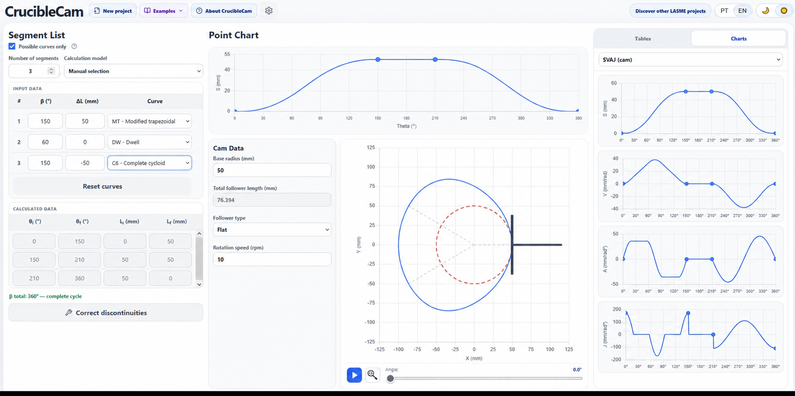

O CamForge é uma nova ferramenta do LASME para cálculo e projeto de cames de disco com seguidores de translação. Embora sua apresentação interativa favoreça o uso didático em engenharia, seu objetivo principal é o projeto prático: transformar um movimento prescrito em um perfil de came, avaliar a cinemática resultante e corrigir incompatibilidades entre trechos consecutivos.

O projeto é apresentado na página do CamForge no LASME, enquanto o ambiente de cálculo funciona na versão web do CamForge em português. Também está disponível uma versão web em inglês. Como o programa funciona no navegador, pode ser utilizado em aulas, estudos preliminares de engenharia e comparações entre leis de movimento sem instalação local.
Uma ferramenta de engenharia para projeto industrial de cames
Um came destinado à aplicação industrial precisa atender a mais do que o deslocamento exigido para o seguidor. A lei escolhida determina velocidade, aceleração e jerk; o perfil também deve ser compatível com a geometria do seguidor, os limites de ângulo de pressão e a curvatura. Esses critérios influenciam carregamento dinâmico, condições de contato, vibração, desgaste e viabilidade de fabricação do mecanismo.
O CamForge organiza o ciclo completo de 360° em segmentos definidos pela extensão angular (β) e pela variação de deslocamento (ΔL). A partir dessa especificação, calcula ângulos e posições iniciais e finais, gera o contorno do came e apresenta as grandezas necessárias para avaliação de engenharia. O programa trabalha com seguidores planos e de rolete, incluindo excentricidade no modelo com rolete, e fornece animação do perfil para inspeção visual do mecanismo.
Biblioteca com 65 opções de curvas
A versão revisada contém 65 opções selecionáveis de curvas, correspondentes a 40 modelos identificados de leis de movimento quando são agrupadas as variantes de subida, retorno, descida e parada. A biblioteca inclui parada, velocidade constante, parábola, cicloides e harmônicas; curvas cúbicas e polinômios de graus superiores; aceleração trapezoidal; harmônica dupla; formulações de Gutman, Freudenstein, Weber e Berzak; além de curvas cicloidais, senoidais e trapezoidais modificadas.
Essa variedade é importante porque não existe uma única lei de movimento ideal para todas as aplicações. O projetista pode priorizar menor aceleração máxima, redução de jerk, compatibilidade com segmentos vizinhos, menor ângulo de pressão ou raio de curvatura mais favorável. Por isso, o CamForge trata a escolha da curva como decisão de projeto, e não apenas como escolha gráfica.
1. Seleção manual com filtro de curvas compatíveis
No modelo de seleção manual, o projetista informa β e ΔL para cada segmento e escolhe a lei de movimento. Quando o filtro Somente curvas possíveis está ativo, a lista é reduzida de acordo com os sinais de velocidade e aceleração exigidos nas junções entre os segmentos. Permanecem visíveis apenas as curvas capazes de participar daquela transição local.
Esse filtro simplifica de maneira significativa uma tarefa normalmente trabalhosa. Em vez de examinar as 65 opções em todos os trechos, o usuário trabalha com um subconjunto tecnicamente pertinente para aquele segmento. O modelo preserva o controle do engenheiro—pois a escolha final continua sendo manual—ao mesmo tempo que reduz alternativas incompatíveis e ajuda a compreender por que determinadas curvas podem ser conectadas e outras não.
2. Busca automática de soluções possíveis
No modelo de busca automática, a entrada é reduzida aos ângulos e às variações de deslocamento dos segmentos. O CamForge calcula posições e ângulos acumulados, compara os sinais de velocidade e aceleração nas fronteiras e enumera todas as sequências de leis de movimento compatíveis encontradas para o ciclo especificado.
O resultado não se limita a uma recomendação opaca. O programa apresenta as soluções possíveis, identifica as curvas atribuídas a cada segmento e permite selecionar e comparar uma sequência. No exemplo revisado com três segmentos, a mesma especificação geométrica produziu centenas de combinações admissíveis, o que ilustra a rapidez com que o espaço de busca cresce quando várias leis são consideradas simultaneamente.
Para o projeto industrial, esse modo é especialmente útil na etapa exploratória. Ele permite gerar diversos arranjos cinematicamente plausíveis antes que o engenheiro os filtre por critérios dinâmicos, geométricos e de fabricação.
3. Correção de descontinuidades de velocidade e aceleração
O recurso mais característico do CamForge é o modo de correção de descontinuidades. O projeto de cames por trechos apresenta um gargalo recorrente: cada segmento pode ser válido isoladamente e, ainda assim, conectar-se mal ao seguinte. Uma descontinuidade de velocidade implica demanda impulsiva de aceleração, enquanto uma descontinuidade de aceleração produz salto de jerk e intensifica a excitação dinâmica. Em uma máquina real, essas incompatibilidades podem aparecer como impacto, vibração, ruído, perda de contato e desgaste acelerado.
A correção manual dessas junções é difícil porque as derivadas normalizadas de uma lei de movimento são escaladas tanto pelo intervalo angular quanto pelo curso. Uma alteração em β modifica o tempo angular disponível para o movimento; uma alteração em ΔL muda a escala do deslocamento. Além disso, as variáveis são limitadas pelo ciclo total do came e pelo processo que o seguidor precisa executar.
O CamForge foi desenvolvido para enfrentar esse gargalo por meio de dois modelos explícitos de correção:
- Mudança de beta: mantém as variações de deslocamento e as curvas selecionadas, mas redistribui os intervalos angulares dos segmentos para compatibilizar as condições de velocidade e aceleração.
- Mudança de L (ΔL): mantém os intervalos angulares e as curvas selecionadas, mas ajusta as variações de deslocamento dos segmentos para obter condições compatíveis nas junções.
A janela de correção diagnostica as junções, procura alternativas contínuas e mostra uma prévia do projeto corrigido antes da aplicação. Também permite limitar as variações ou bloquear determinadas variáveis por segmento. As soluções candidatas podem ser comparadas por velocidade, aceleração e jerk máximos, salto de jerk, raios mínimos de base e primitivo, ângulo de pressão máximo e raio mínimo de curvatura.
Geometria, SVAJ e verificações de projeto
Depois da seleção de uma solução, o programa relaciona a lei de movimento ao came físico. Os resultados podem ser inspecionados em tabelas ou gráficos, incluindo contorno do came, curva primitiva, diagramas SVAJ do came e do seguidor, ângulo de pressão e raio de curvatura. A animação sincroniza a posição do came com o seguidor e auxilia na verificação da relação entre as curvas analíticas e o mecanismo real.
| Entrada ou verificação de projeto | Recurso do CamForge |
|---|---|
| Movimento prescrito | Definição de segmentos por β, ΔL e lei de movimento. |
| Configuração do seguidor | Seguidor plano ou de rolete, com excentricidade no modelo com rolete. |
| Resposta cinemática | Diagramas de deslocamento, velocidade, aceleração e jerk para came e seguidor. |
| Verificação geométrica | Contorno do came, curva primitiva, ângulo de pressão e raio de curvatura. |
| Compatibilidade entre segmentos | Filtro manual, busca automática e correção de descontinuidades. |
Clareza didática com objetivo industrial
O CamForge é didático porque expõe o raciocínio que conduz ao cálculo: o usuário observa no mesmo ambiente os dados dos segmentos, as leis escolhidas, o comportamento nas fronteiras, os diagramas SVAJ e a geometria gerada. Isso o torna adequado para disciplinas de mecanismos, projeto de máquinas e sistemas mecânicos.
Seu alcance, contudo, vai além da demonstração. A combinação de biblioteca ampla, busca sistemática de soluções, correção de continuidade e verificações geométricas caracteriza o programa como uma ferramenta de projeto preliminar de cames para aplicações industriais. Ele ajuda o engenheiro a passar da especificação de movimento do processo para um perfil de came tecnicamente avaliável e a comparar alternativas antes das verificações detalhadas de estrutura, tribologia, tolerâncias e fabricação.